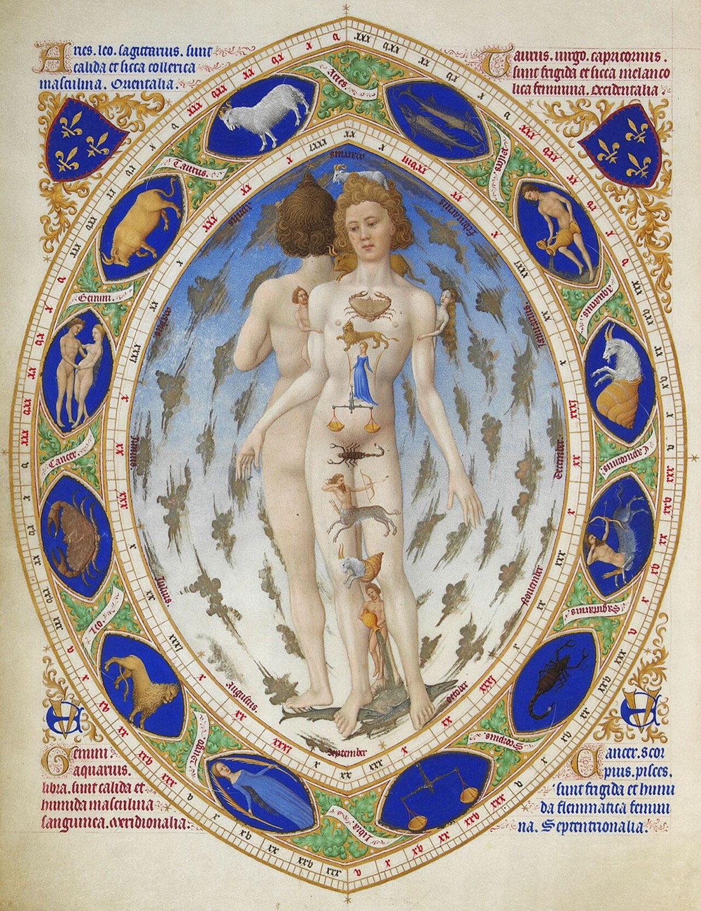
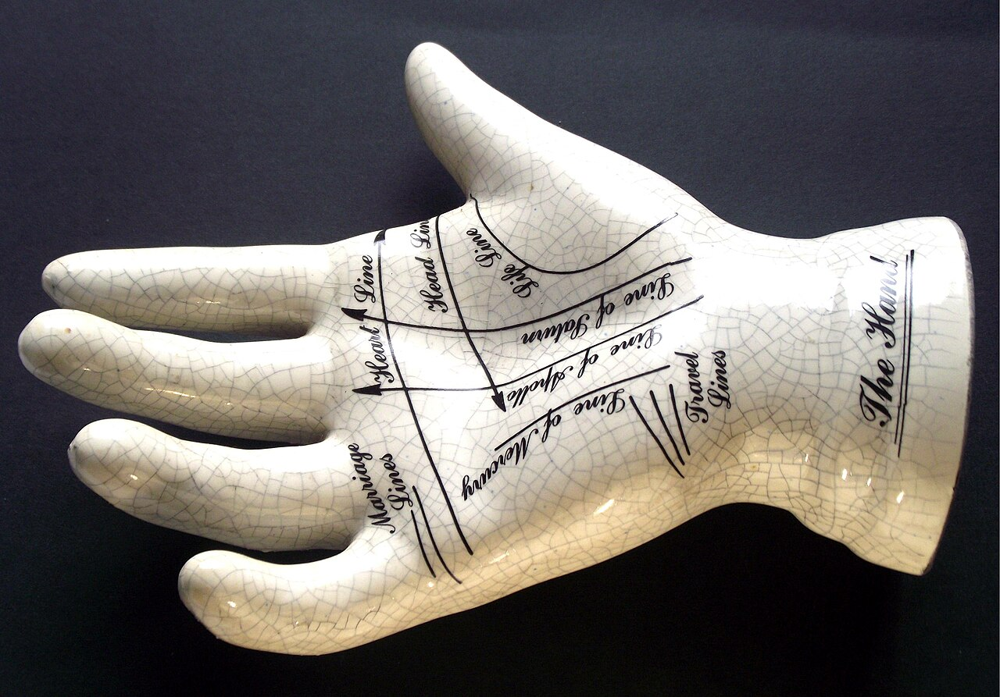
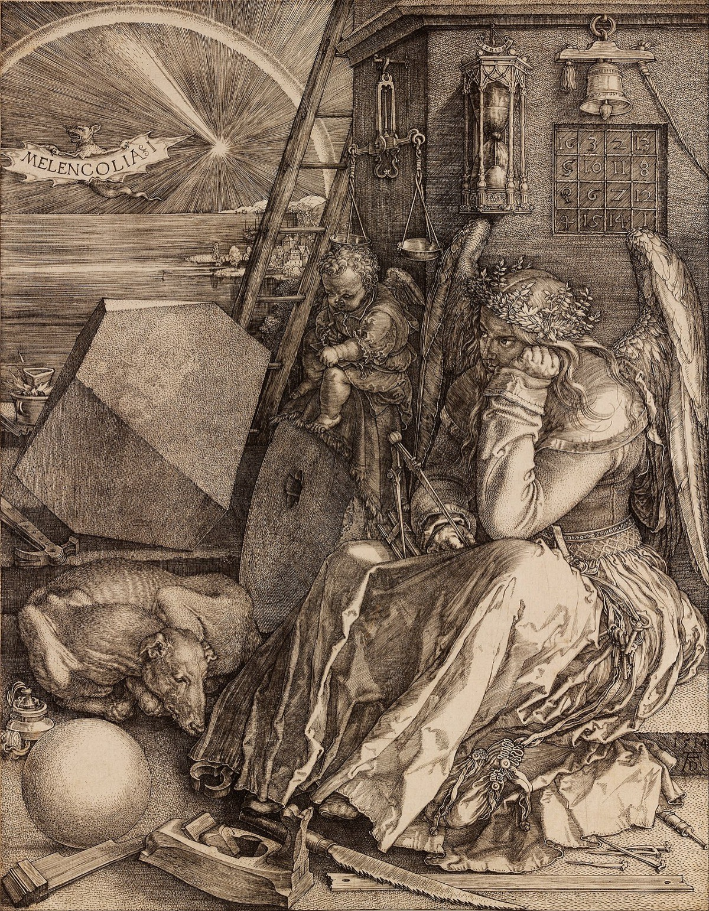

“The fault, dear Brutus, is not in our stars, but in ourselves, that we are underlings.”Shakespeare, Julius Caesar, I.ii
In 1948, the psychologist Bertram Forer ran what was supposed to be a personality test on his introductory psychology class at the University of California. He distributed a standard inventory to each of his thirty-nine students, asked them to fill it out honestly, and collected the papers. A week later he returned a typed personality analysis to each one, marked confidential, and asked each student privately to rate, on a scale of zero to five, how accurately the analysis described them. The mean rating was 4.3 out of 5. Most of the students reported that the analysis fit them so precisely that they suspected Forer had simply intuited their character from observing them in class. A few thought he had administered some other, more penetrating test in secret. He let them sit with that for a moment before handing out the next sheet: a copy of the analysis every other student had received. The papers were identical. Each had read the same generic paragraph — cobbled together by Forer the night before from a newsstand astrology column — and each had recognised it, with high confidence, as a portrait of themselves.1
The paragraph went, in part, like this. You have a great need for other people to like and admire you. You have a tendency to be critical of yourself. You have a great deal of unused capacity which you have not turned to your advantage. While you have some personality weaknesses, you are generally able to compensate for them. At times you are extroverted, affable, sociable, while at other times you are introverted, wary, reserved. You have found it unwise to be too frank in revealing yourself to others. Read it once, slowly. Some of it is probably true of you. Probably most of it is. That is the point. Forer had not predicted any of his thirty-nine students. He had only said about each of them the things that are, in some measure, true of every adult. The students did not check the analysis against themselves. They felt it against themselves, found a great many points where it touched something real, and rated the whole document accordingly.
The phenomenon Forer caught in his classroom is now called the Forer effect — sometimes the Barnum effect, after P. T. Barnum’s alleged dictum that his shows offered “a little something for everyone” — and it is the engine of every astrologer, every cold reader, every horoscope app on your phone, and every personality quiz on the internet. The customers of all of these are not fools. They are running, exactly as Forer’s students did, the normal pattern-matching machinery of a normal mind on the kind of statement that the machinery cannot help but find a fit for. The chapter is about that machinery, and about the much longer history of believing the stars know us — a history which is, in places, the history of science itself, and which still produces, in our own century, the news-stand horoscope and the wedding-night palm reader and a billion-dollar app economy of generic predictions sincerely consumed.
A generic paragraph — cobbled together the night before from a newsstand astrology column — was rated 4.3 out of 5 for personal accuracy. The students had not been read. The paragraph had been recognised.
The Long LineageWhen Astrology Was a Science
It is easy, from the modern side of the great split, to assume that astrology was always an embarrassment of the credulous and astronomy the sober work of the careful. The truth is that the two are the same word, the same craft, and the same observatories, for almost the whole of recorded human history. The split is recent and incomplete.
The first careful sky-watchers we know of were the priests of Mesopotamia, who, from at least the second millennium BCE, recorded the planets — the seven moving lights of the visible heaven, including the sun and moon — against the fixed stars, and noticed that their motions could be predicted. Within several centuries the same priests had begun reading meaning into the patterns: the wanderings of Jupiter and Mars portended the fates of kings, the conjunctions of planets foretold harvests and wars. The systematic body of doctrine that resulted — the casting of horoscopes from the sky at the moment of birth, the assignment of personality and fate to each of the twelve sectors of the ecliptic — passed from Babylon to Hellenistic Egypt, and from there into the Greek-speaking Mediterranean. Claudius Ptolemy, in the second century of our era, wrote two books: the Almagest, which is the foundation of all later European astronomy, and the Tetrabiblos, which is the foundation of all later European astrology. He saw no contradiction between the two and would have been baffled by the suggestion of one.2
From the late classical world this single discipline passed into Islamic civilisation, where it was preserved and elaborated by figures of extraordinary mathematical ability — al-Bīrūnī, al-Kindī, Abū Maʿshar — and from there, with the translation movements of the twelfth and thirteenth centuries, into Latin Europe. The medical schools of medieval Europe taught the casting of birth charts as part of standard practice; physicians were expected to know the astrological signs governing each region of the body, because the wrong sign at the wrong time was understood to be a genuine medical risk. The Anatomical Man of our frontispiece is, in its time and place, a working diagram — the same way an anatomical poster in a modern clinic is a working diagram. Surgery on the head was avoided when the moon was in Aries (the head’s sign); bleeding the foot was avoided when the moon was in Pisces. This was not a piece of folk superstition floating beside the real medicine. It was the real medicine, taught at Paris and Bologna and Salerno, used in the hospitals, vouched for by the Faculty.
And the splitting was slow. Tycho Brahe, the greatest naked-eye observer of stars in history, cast horoscopes for the Danish court. Johannes Kepler, who would discover that the orbits of the planets are ellipses, supported his family for years by working as the imperial astrologer of Rudolf II. Galileo cast charts for his friends and patrons. Newton spent at least as many of his working hours on alchemy and biblical chronology as on the Principia. The clean separation we now draw — astronomy is science, astrology is superstition — arose only with the eighteenth century’s success in producing, by careful astronomical method, predictions that astrology could not match; and it arose, even then, slowly. As late as the nineteenth century there were sober professors of medicine who still consulted the calendar before scheduling an operation.3
We say this not to defend astrology but to be fair to the believer. The doctrine you would now mock has, for most of the history of literate humanity, been the same body of thought that gave us the calendar, the orbit of the planets, and the first map of the brain’s relation to the body. The complaint that intelligent moderns who consult their horoscopes are foolish has to reckon with the company they keep. Ptolemy, Kepler, and Newton are not company that history hands out lightly.
The MechanismHow a Stranger Knows You So Well
How does a horoscope come to feel like a recognition? The basic ingredients are five, and once you have seen them named, you cannot fail to notice them.
The first is the Barnum statement — the artful claim that is true of almost everyone but feels personal: "You have a tendency to be critical of yourself"; "You are at times insecure"; "You have unfulfilled potential." These statements sound specific because they touch real, recognisable inner life; what they are not is selective. They distinguish you from no one. The horoscope reader takes them as a personal description because the alternative — that they are a portrait of every human being on the planet — never occurs to them, because the document arrived addressed to them by name.
The second is subjective validation. Given any statement, the mind searches its own contents for instances where it is true and quietly ignores those where it is not. "You sometimes prefer solitude" finds the memory of the long walk last Saturday and does not look for the four nights of company. The student reading Forer’s paragraph found ten or twelve places where the description fit, registered each one as a hit, and did not deduct points for the places where it did not.
The third is confirmation bias, which we treated at length in Volume I, Chapter Three. Once the reader has formed the working hypothesis “this is true of me,” everything in the document that supports it counts; everything that does not is forgotten or interpreted away. The bias is, as we saw there, the engine of unshakeable belief in every domain. Horoscopes have no special access to it. They are merely a domain in which it is allowed to run unchallenged.
The fourth is the authority halo. A paragraph handed out by a professor at a university feels more authoritative than the same paragraph handed out at a bus stop. A horoscope written under the byline of an “astrologer” with letters after his name and a column in a national newspaper carries the residual weight of the institutions that publish it. The reader is not, as it sometimes appears, naïve to authority. They are responding rationally to the social signals that come bundled with the text.
The fifth, and the most poignant, is desire. The customer of an astrologer is, almost without exception, a person who would like the universe to have a hidden order in which they personally figure as a named character. The desire is sincere and ancient. It is also, we will show in a moment, the precise mechanism by which the test of astrology has been done, for sixty years, and failed.
The TestsWhat Sixty Years of Looking Have Found
The history of controlled tests of astrology is, by any honest measure, a closed book. The most famous single experiment is Shawn Carlson’s 1985 study, published in the journal Nature. Carlson recruited twenty-eight professional astrologers, agreed in advance with their representatives on the protocol, and obtained from a separate sample of subjects (a) their natal data — date, time, and place of birth — and (b) their scores on the California Psychological Inventory, a standard personality test. The astrologers cast charts from the natal data and were then given, for each chart, three CPI profiles — one of the true subject, two of other subjects — and asked to identify the profile that matched. The astrologers themselves had told Carlson, before the experiment, that they expected to be right at least half the time. Chance alone would deliver one in three.
The astrologers got one in three. They performed, against their own pre-registered prediction, at the rate of random guessing.4
Carlson’s study has been repeated, with variations, many times since. A meta-analysis by Geoffrey Dean of forty studies through 1996 found no evidence that astrologers could match charts to people, or predict marriage compatibility, or distinguish criminals from priests, at better than chance. A famous large-scale study of more than two thousand people born within minutes of each other — “time twins” born in the same hospitals in the same hours, who should, by astrological theory, share an enormous amount of fate — found no detectable correlation between them on more than a hundred personality and life-outcome variables.5 A long French study of soldiers, sportsmen, professionals and criminals found no association between birth sign and profession beyond what chance would predict.
One striking, often-misreported result is from Michel Gauquelin, a French psychologist of the 1950s and 1960s who had set out to defend astrology and ended up showing that classical sun-sign astrology has no effect — while reporting a small statistical correlation between the position of Mars at birth and later success as an athlete (“the Mars effect”). For decades the Mars effect was held up by serious astrological apologists as the surviving residue. Subsequent careful re-analysis, larger samples, and an unfortunately revealed selection process inside Gauquelin’s data made the effect disappear; the consensus is that the original signal was an artefact of how Gauquelin’s sample of athletes had been chosen.6 The clean version of the verdict is: astrology, of every form that has been tested under controlled conditions, has failed those tests.
This is not a tentative or in-the-balance verdict. The literature is consistent and old. If astrology made true claims, sixty years of looking would have caught the signal by now. Sixty years of looking has caught the Forer effect instead.
The Same EngineThe Hand and the Cold Reading

Palmistry, or chiromancy, is astrology’s smaller and stranger cousin: the practice of reading personality and fate from the lines of the palm. It is much older than astrology in some respects — references to it appear in early Indian and Greek sources — and it has, in its way, the same recurring structure. There are named lines (the Heart Line, the Head Line, the Life Line, the Lines of Saturn and Mercury and Marriage); there are interpretive rules attached to each; there are professional readers; and there is a long, unbroken record of customers who report that the reader knew things about them they had told no one.
Two facts about palmistry, taken together, suffice to explain the practice. The first is that the lines of the palm are real. They are anatomical creases produced by the way the human hand folds, and they vary from person to person in length, depth, and intersection. A reader who has spent years looking at hands has, in fact, learned to read something — not the future, but the hand itself. Old hands look different from young ones. Hands that have done manual work look different from hands that have not. The hand of an anxious person held tense for a lifetime sits differently in the open than the hand of someone calm. There is real information on the surface of the body, and a careful observer can read some of it.
The second is that the actual session of palm-reading is a cold reading, structurally identical to the technique a skilled medium uses, which we covered at length in Chapter Three. The reader makes a Barnum-style opening (“You have suffered a great disappointment in your past, but you are stronger for it”); watches the customer’s face for the micro-expressions of recognition or denial; refines into a more specific claim when the recognition flickers (“A loss in love, perhaps”); pulls back if the customer frowns (“or in a friendship”); locks in when they nod. Within five minutes the reader has produced a series of statements that feel, to the customer, like the recovery of facts that no stranger could have known. The reader, to be clear, is not always cynical about this. Many palmists are sincere. The technique works on the reader as well as on the read.
What is being read is not the hand. It is, as in every other domain we have surveyed, the customer.
An Older Picture of It AllDürer’s Melencolia

It is worth pausing on Dürer’s greatest engraving, because it shows what astrology was, before the split. The figure is not a fool. She is the brooding, intellectual, Saturn-governed temperament — the educated mind of 1514 — surrounded by the instruments of every learned craft, and immobilised by the weight of what she knows. Her astrology is not the news-stand kind. It is the medieval theory of the four temperaments, the doctrine of the planetary humours, the conviction that to be born under Saturn was to be heavy, brilliant, and prone to despair. Dürer himself believed it of himself. So did the Florentine Marsilio Ficino, who treated his own melancholy with sun-talismans designed to draw down Jupiter and Sol as counter-influences. So did, two centuries later, Robert Burton, whose Anatomy of Melancholy (1621) is still a great book of psychology and is built, in places, on assumptions that any modern reader would call astrology.
What this means, practically, is that even when astrology was wrong as a theory of fate, it was sometimes right as a vocabulary of the inner life. The four temperaments — sanguine, phlegmatic, choleric, melancholic — were, for two thousand years, the working language Europe used to describe what we now call personality types. The Saturn-melancholy of Dürer’s figure is recognisable today as something close to what a clinician might describe as a depressive temperament with high intellectual function. The mistake of astrology was not in the descriptions; it was in the causes it assigned to them. The stars did not put the melancholy in Dürer’s figure. They named, beautifully, what she felt. That is one of the things humans have always wanted from the cosmos — not prediction but language — and it is one of the reasons astrology has not gone away.
The Objection That Matters“But What Is the Real Harm?”
An honest reader, having followed us this far, will ask the question we have been circling. I read my horoscope. I do not, in any literal sense, believe the stars determine my fate; I take the description as a small daily prompt to reflect on my life. The forecast is rarely right and I do not notice when it is wrong. What, exactly, is the harm? If it provides comfort — if it gives a frightened person a small structure for the chaos — is it not, on balance, useful?
This is a serious objection and it deserves a careful answer in two parts.
The honest first part is: most casual horoscope-reading is, by any reasonable measure, harmless. The Sunday-supplement column read with a small smile, the birthday compatibility consulted with a partner over coffee, the personality-by-sign jokes at a dinner table are, for the most part, a kind of low-grade folk literature about the inner life. They are no worse than astrology being right for the wrong reasons, and possibly better than a great many things people do with their inner lives. We are not in the business of telling people who enjoy a quiet ritual to stop enjoying it. To say that astrology has no empirical support is not, by itself, to say that consulting it is a moral failing.
The honest second part is: where it ceases to be harmless is where it ceases to be casual. The patient who delays a medical procedure because the moon is in Scorpio. The investor who buys when an astrologer’s newsletter says buy. The young person who refuses a partner because of incompatible signs. The parent who steers a child into a profession because the chart said. The harm is not in the reading. It is in letting a decision that mattered turn on it. The customer of a serious astrologer who paid serious money to be told whether to leave their marriage was not consulting a literature. They were consulting an oracle, and the oracle was the Forer effect with a chart pinned to it.
And there is a quieter harm worth naming, because we have been honest about the desire that underlies all of this. The desire to be a named character in a cosmically meaningful story is a real human need; the universe does not, in fact, supply it; and astrology is one of the things that can offer a counterfeit. Many of our patients in clinical practice have spent years — sometimes decades — consulting one astrologer after another, looking for the chart that would explain their loneliness, and finding only a series of charts that almost did. Each new reading worked for a while. None of them worked for long. The need was not for a chart. The need was for the work of love, of community, of meaningful labour, of mourning, of being seen. The chart, in those cases, was the obstacle.
The harm is not in the reading. It is in letting a decision that mattered turn on it — and in spending years consulting charts that almost work, instead of doing the harder work that would.
“Why does the cosmos remain a comfort?”
After every controlled test, the consultation does not stop. Six who have asked why.
“The mind is built to find pattern. The horoscope is built to provide pattern. The match is unforgiving. We are not arguing the customer out of a credulous mistake; we are arguing them out of doing what minds do.”
“Almost every culture has produced something like astrology — the eight pillars of Chinese astrology, Vedic jyotisha, the Mesoamerican sacred calendars, the Mesopotamian originals. The variety of systems is itself a clue. We are not detecting the same true signal twelve different ways. We are exporting the same human need into twelve different cosmologies.”
“In my consulting room I have stopped arguing against the casual horoscope. I argue against the use of the chart as the locus of decision. The patient who reads her stars over coffee is not who I am worried about. The patient who has not left a cruel marriage in nine years because her astrologer keeps telling her to wait for the next Venus transit — her, I worry about.”
“Astrology was, for most of the history of educated humanity, the same craft as astronomy. The split is recent. The believer is not stupid; the believer is in the company of Ptolemy, Kepler, and Newton. What separates them from us is one specific, late, hard-won discovery — that the planets do not, in fact, cause our characters. Insisting on that discovery is not snobbery. It is the discovery.”
“The Carlson study, Dean’s meta-analysis, the time-twins data, the Gauquelin saga — the file is closed. A century of attempts to detect any real astrological effect has detected the Forer effect and nothing else. The honest scientific position is not ‘we don’t know yet.’ It is ‘we have looked carefully, and we know.’”
“The deepest answer to your question is that the cosmos remains a comfort because we want a cosmos that knows us by name. To want this is to be human; to substitute the chart for the longing is to leave the longing unaddressed. The harder work is to give the longing what it actually wants — meaning, work, love, mourning, community — and not the picture of the heavens addressed to you, by name, in the morning paper.”
Myth vs. RealitySetting the Record Straight
The Claim
“The positions of the planets at the moment of your birth shape your personality and your fate. A trained astrologer, given accurate birth data, can describe you, predict your compatibility with a partner, and forecast events that the laws of ordinary causation cannot anticipate. The long survival of astrology across cultures is itself evidence that it tracks something real.”
What the Evidence Shows
Controlled tests of astrology, including Carlson’s 1985 Nature study with practising astrologers, large-scale “time twin” studies, and Dean’s meta-analyses, have consistently found no signal. The perceived accuracy of horoscopes and palm readings is fully accounted for by the Forer effect, subjective validation, confirmation bias, and cold-reading techniques. The cross-cultural ubiquity of astrology is evidence for the universality of the underlying psychological need, not for the truth of any particular astrological system.
We have used the word pseudoscience sparingly, on purpose. Astrology in its modern news-stand form fails every test of an empirical theory and has done so for sixty years; that part is settled. Astrology in its historical form was the same craft as astronomy, was practised by the founders of modern science, and produced beautiful and lasting descriptions of the human temperaments. These are different things, and we treat them differently. The astrology your grandmother read on Sunday morning is not the astrology of Ptolemy. Insisting on the difference is part of intellectual honesty.
The lines worth carrying out of this chapter.
- A horoscope feels true because it is built to feel true. Barnum statements, subjective validation, confirmation bias, the authority halo, and the customer’s own desire combine to produce a perceived accuracy that has nothing to do with any signal from the stars.
- Astrology has been tested for sixty years and has failed every test. Carlson 1985 in Nature, the meta-analyses, the time-twin data — the file is, by any honest reading, closed.
- The believer is not foolish. They are in the company of Ptolemy, Kepler, and Newton, and they are using the standard pattern-finding machinery of a healthy human mind. Treating them with contempt is the worst possible response and is also a category error.
- The harm is not in the casual reading; it is in the consequential decision. The horoscope at breakfast is folk literature; the horoscope that decides a marriage or a surgery is a substitute for honest counsel.
- Behind the chart is a real human need — to be a named character in a meaningful cosmos — that the chart cannot, in the end, meet. The work the chart is doing is real, and it has to be met by something else: meaning, labour, love, community, mourning, being seen.
If you keep one sentence: the stars do not know you, but the longing to be known by something larger is exactly what they keep getting paid to almost meet — and that longing deserves a better answer than a chart.
Research ReferencesSources & Notes
- ScienceForer, B. R., “The fallacy of personal validation: a classroom demonstration of gullibility,” Journal of Abnormal and Social Psychology 44 (1949).
- HistoryPtolemy, Tetrabiblos, c. 2nd c. CE; Pingree, D., on Babylonian and Hellenistic astrology in From Astral Omens to Astrology (1997).
- HistoryKepler’s and Tycho Brahe’s astrological work is documented in Caspar, M., Kepler (1959); on Newton’s alchemy and theology see Westfall, R. S., Never at Rest (1980).
- ScienceCarlson, S., “A double-blind test of astrology,” Nature 318 (1985).
- ScienceDean, G. & Kelly, I. W., “Is astrology relevant to consciousness and psi?” Journal of Consciousness Studies (2003); on time twins: Dean, G., et al., “A scientific inquiry into the validity of astrology,” Journal of the Society for Psychical Research (1995); the time-twin sample is around 2,100 individuals.
- DebatedGauquelin, M., on the “Mars effect” (various; from 1955 on); critical re-analysis: Benski, C., et al., The “Mars Effect”: A French Test of Over 1000 Sports Champions (1996), Comité Para. The consensus rejection is that the original sample showed selection effects rather than a planetary correlation.
- ReferenceOn the Forer / Barnum effect more generally: Snyder, C. R. & Shenkel, R. J., “The P. T. Barnum effect,” Psychology Today (1975); Furnham, A., The Validity of Self-Description Inventories.
- HistoryFicino, M., De Vita Triplici (1489); Burton, R., The Anatomy of Melancholy (1621). On the Saturn-melancholy tradition: Klibansky, R., Panofsky, E. & Saxl, F., Saturn and Melancholy (1964).
- HistoryOn palmistry’s history: Beery, K., The Origin and History of Palmistry (1947); on cold reading mechanisms: Hyman, R., “Cold reading,” The Zetetic (1977), already cited in Chapter Three.
Citations support the science presented; a production edition would carry full bibliographic detail and DOIs, externally verified.
Going FurtherRecommended Books
Read
- Geoffrey Dean & Ivan Kelly, the published meta-analyses of astrology testing
- Robert Burton, The Anatomy of Melancholy (1621) — the Saturn-melancholy tradition, beautifully written
- Raymond Klibansky, Erwin Panofsky & Fritz Saxl, Saturn and Melancholy (1964)
- Anthony Grafton, Cardano’s Cosmos (1999) — an astrologer-scholar of the Renaissance
- Susan Blackmore, The Adventures of a Parapsychologist (1986) — a careful believer’s honest reckoning
Watch
- Run the Forer experiment on yourself: read Forer’s 1948 paragraph cold and rate how well it fits you. Then try it on a friend.
- Derren Brown’s televised cold-reading demonstrations
- Documentaries on Carlson’s 1985 study and the long history of astrology testing